DV-DOC-001 · Enviar o documento para revisão termina em "Ocorreu um erro inesperado." e não grava a criação no histórico
Ao clicar em "Assinar e Submeter" num documento completo, a tela mostra "Ocorreu um erro inesperado.". O documento, porém, **muda de situação** (para "PENDENTE ANÁLISE CRÍTICA") e o **histórico não recebe** a linha "CRIAÇÃO DO DOCUMENTO". Aconteceu em todos os envios da rodada (mais de 20 documentos), com setor revisor de testes e com o setor DIRETORIA, e em documentos novos e em novas revisões. Em um caso isolado (um documento de tipo com treinamento obrigatório) o mesmo erro apareceu também na **pré-aprovação**, que seguiu mas ficou sem a linha "PRÉ-APROVADO" no histórico. *Inferência (a confirmar com o desenvolvimento):* o código envia a notificação ao revisor **antes** de gravar o histórico; se a notificação falha, o histórico não é gravado, mas a mudança de situação já foi salva.
Como reproduzir o erro, passo a passo
- Entrar como elaborador, abrir Documento e incluir um documento (tipo, título, setor).
- Anexar um arquivo, adicionar um setor revisor e uma aplicação.
- Preencher a justificativa e clicar "Assinar e Submeter"; confirmar e autenticar.
- Ver a mensagem de erro; depois consultar o documento: situação mudou, histórico vazio.
Esperado
Mensagem de sucesso, situação "Em revisão" e histórico com "CRIAÇÃO DO DOCUMENTO", justificativa, data e assinante; revisor notificado.
Obtido
"Ocorreu um erro inesperado."; situação mudou; histórico vazio.
Evidência (captura da tela)
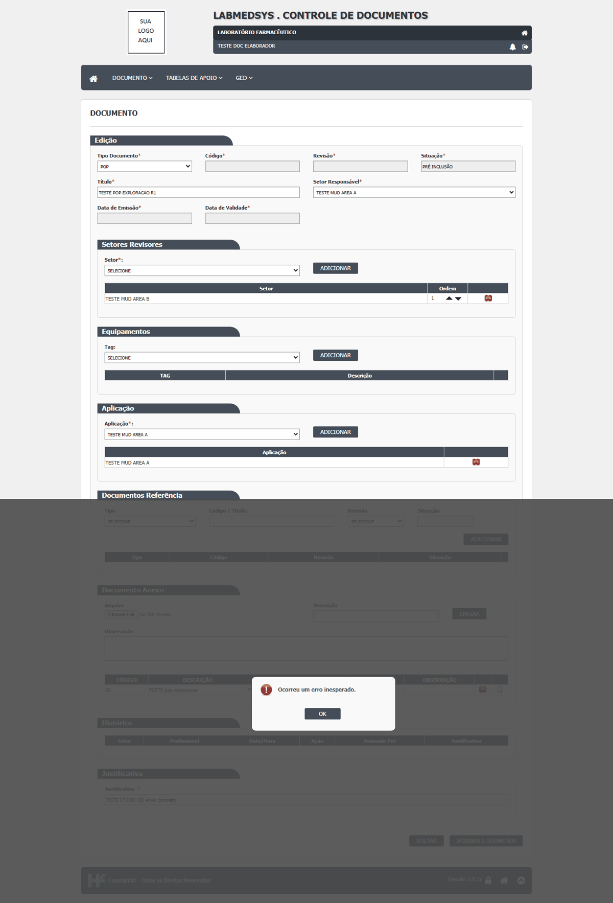
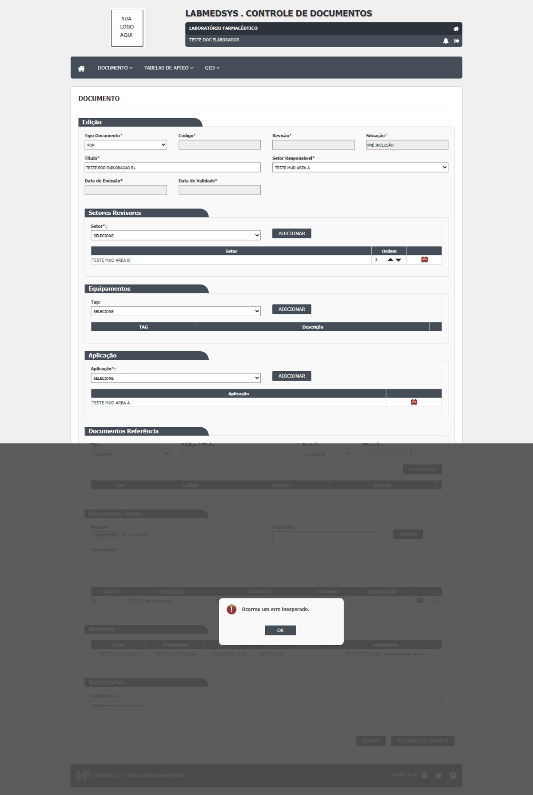
DV-DOC-002 · A mesma pessoa pode pré-aprovar e aprovar o mesmo documento
Um usuário com as duas funções pré-aprovou um documento e, na lista da tela Aprovação Documento, **viu o mesmo documento** e o aprovou. O histórico mostra PRÉ-APROVADO e APROVADO assinados pela **mesma pessoa**, sem nenhuma recusa. A regra RN-DOC-020 dizia que a lista esconderia o documento de quem pré-aprovou; na tela do menu isso não acontece. A tentativa pelo endereço da tela não foi feita (fora do escopo pedido).
Como reproduzir o erro, passo a passo
- Dar a um mesmo usuário os perfis de pré-aprovação e de aprovação.
- Pré-aprovar um documento (com anexo final, senha e justificativa).
- Abrir Documento Aprovação com o mesmo usuário e procurar o documento: ele aparece.
- Aprovar com a senha do mesmo usuário.
Esperado
Recusa: quem pré-aprovou não pode aprovar o mesmo documento (e o documento não aparece na lista dele).
Obtido
Aprovou: "Alteração efetuada com sucesso."; situação APROVADO.
Evidência (captura da tela)
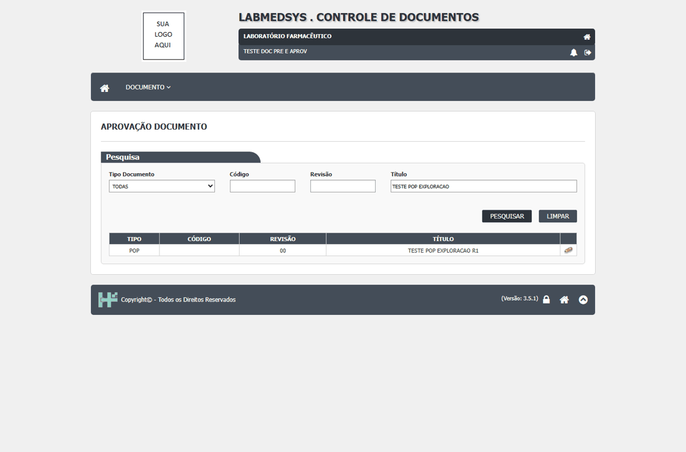
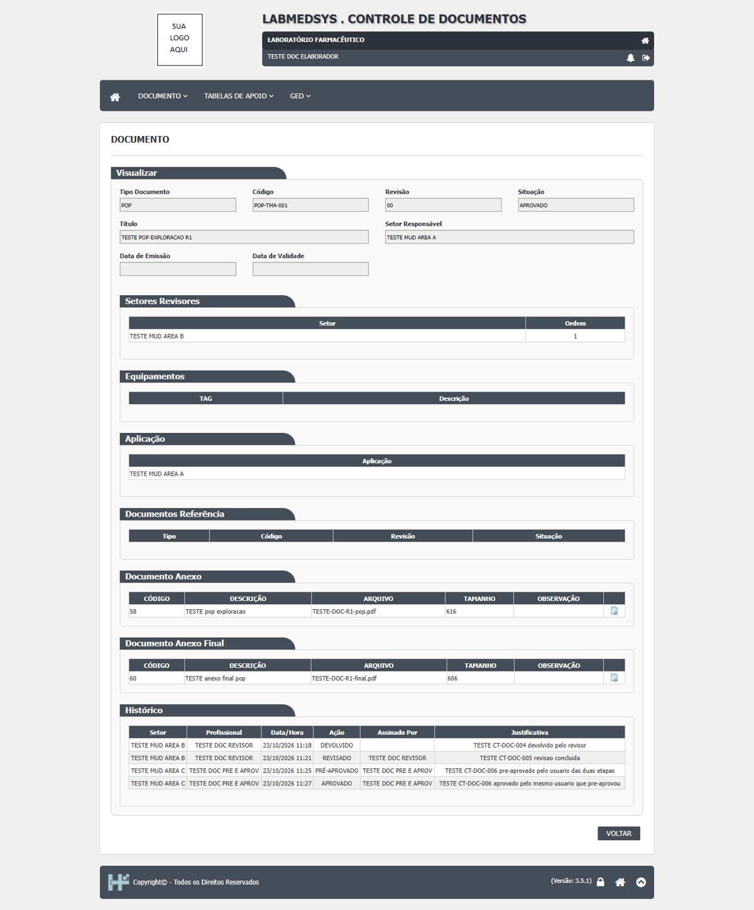
DV-DOC-003 · A assinatura aceita o usuário e a senha de outra pessoa
Na janela "Autenticação" de uma decisão, o usuário logado pode informar o usuário e a senha **de outra pessoa**: o sistema aceita e grava como "Assinado Por" a outra pessoa, enquanto o "Profissional" fica sendo quem estava logado. A assinatura deixa de provar quem decidiu.
Como reproduzir o erro, passo a passo
- Entrar como aprovador.
- Abrir um documento pendente de aprovação e clicar "Assinar e Aprovar".
- Na autenticação, digitar o usuário e a senha do pré-aprovador.
- Ver o histórico: Profissional = aprovador logado; Assinado Por = pré-aprovador.
Esperado
A autenticação deve ser da própria pessoa logada; usuário diferente é recusado.
Obtido
Aceito; "Assinado Por" é outra pessoa.
Evidência (captura da tela)
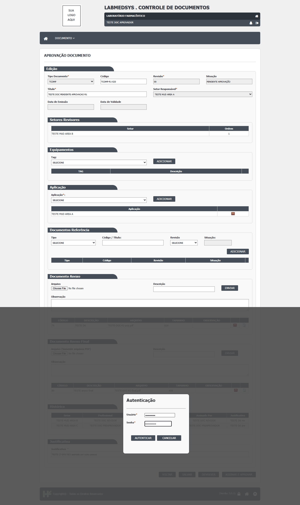
DV-DOC-004 · Documento de tipo sem etapa de aprovação fica vigente no mesmo clique do envio
Com o tipo que só tem a etapa "Vigente" marcada, o envio do documento ("Assinar e Submeter") o deixou **VIGENTE na hora**, sem revisão, pré-aprovação, aprovação, senha, código, número de revisão nem datas de emissão e validade; o histórico ficou vazio. O documento aparece em Visualizar como vigente (com chave de anexo nula, por isso não abre).
Como reproduzir o erro, passo a passo
- Criar um tipo de documento com só a etapa "Vigente" marcada.
- Incluir um documento desse tipo com anexo, setor revisor e aplicação.
- Clicar "Assinar e Submeter".
- Consultar a lista: situação VIGENTE.
Esperado
Documento instruído só entra em vigor depois de aprovado e assinado por pessoa autorizada.
Obtido
Vigente sem aprovação.
Evidência (captura da tela)
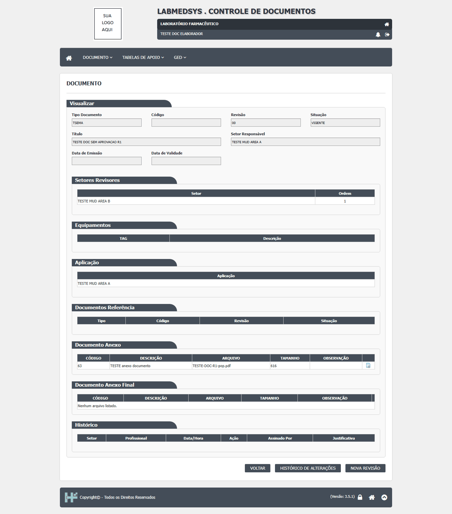
DV-DOC-007 · Documento pode ser posto em vigor com emissão retroativa
Na vigência, a data de emissão é digitada. Com emissão um mês antes de hoje (e antes de o documento ser aprovado), "Assinar e Tornar Vigente" foi aceito: o documento ficou VIGENTE desde 23/09/2026, quando ainda não existia como documento aprovado. Só a emissão **futura** é recusada.
Como reproduzir o erro, passo a passo
- Levar um documento até "Aprovado".
- Abrir Documento Vigência, informar emissão de um mês atrás.
- "Assinar e Tornar Vigente", autenticar.
Esperado
A data de efetividade deve ser a data da decisão (ou nunca anterior a ela).
Obtido
Aceita; vigente com emissão retroativa.
Evidência (captura da tela)
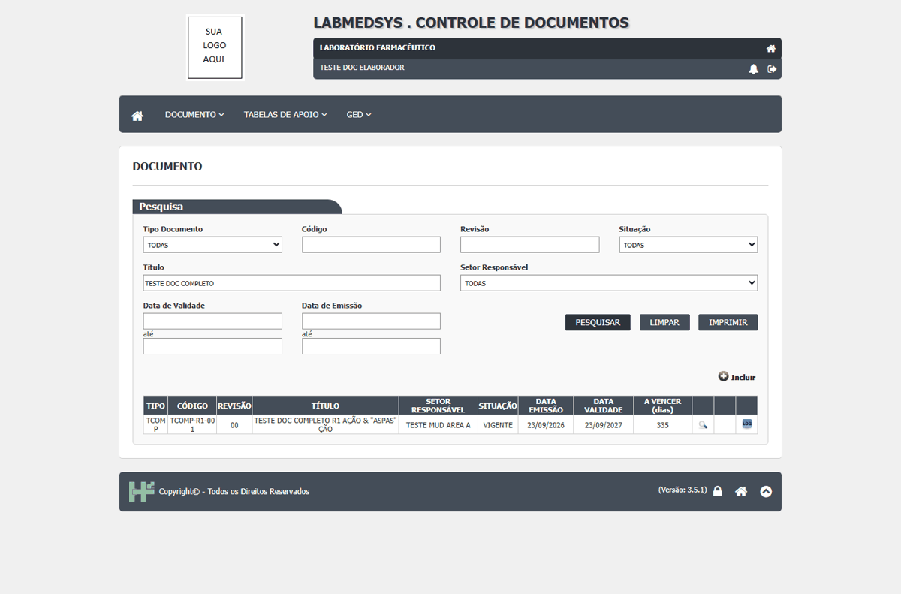
DV-DOC-009 · Documento externo entra como "Vigente" direto, sem análise e sem assinatura
Ao incluir um documento externo escolhendo a situação "Vigente", com datas e aplicação, o sistema grava na hora ("Inclusão efetuada com sucesso."). Não há análise, senha, assinante nem aprovação.
Como reproduzir o erro, passo a passo
- Abrir Documento Externo, Incluir.
- Tipo externo, código, título, empresa, Ativo = Sim, Situação = Vigente, emissão, aplicação.
- Salvar.
Esperado
Documento externo analisado e aprovado antes de valer, com responsável e data.
Obtido
Vigente ao salvar.
Evidência (captura da tela)
DV-DOC-011 · Documento legado vira vigente sem senha e não entra no histórico do documento
Os nomes de quem fez a análise crítica, a pré-aprovação, a aprovação e a vigência são **escolhidos entre os usuários cadastrados** (e aprovação igual à pré-aprovação é recusada), mas essas pessoas **não assinam**: "Tornar Vigente" pede só confirmação e justificativa, **sem senha**, e o documento fica VIGENTE. O histórico do documento (ações e assinaturas do ciclo) fica **vazio**.
Como reproduzir o erro, passo a passo
- Abrir Documento Legado, Incluir (tipo, código, revisão, título, setores), Salvar.
- Na tela de edição: datas, anexo, anexo final, aplicação e os quatro nomes.
- "Tornar Vigente", confirmar e justificar.
- Abrir o documento: histórico vazio.
Esperado
Documento anterior ao sistema entra com o original assinado como evidência e registro de quem o validou.
Obtido
Vigente sem assinatura e sem histórico.
Evidência (captura da tela)
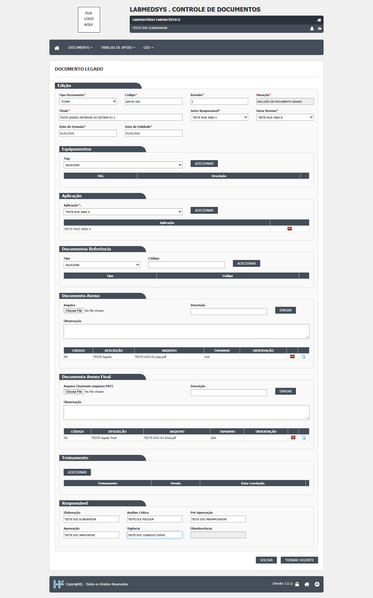
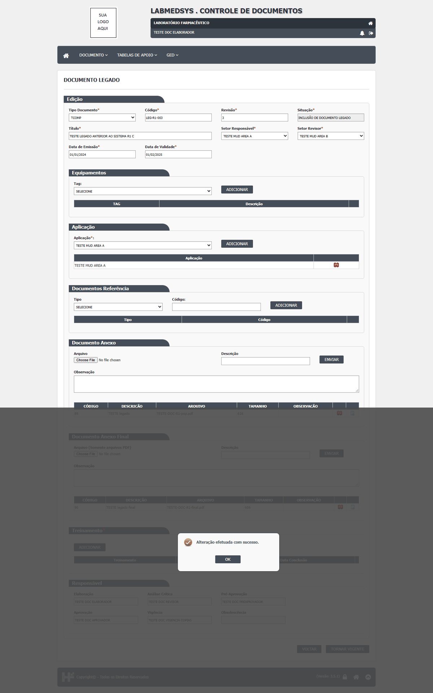
DV-DOC-015 · Todos os relatórios e impressões de lista falham: falta o componente ReportViewer no servidor
O botão Imprimir de seis telas abre uma aba com "Server Error in '/' Application. Could not load file or assembly 'Microsoft.ReportViewer.WebForms, Version=9.0.0.0 …'". Nenhum relatório (lista mestra de documentos, cópia controlada em grade, lista de externos, de legados, de obsolescência, de tipos) sai. A captura traz caminhos de arquivo do código; por isso o defeito é tratado como **confidencial**. Causa provável: componente de relatório não instalado no servidor de teste (a confirmar com a TI).
Como reproduzir o erro, passo a passo
- Abrir uma das listas e clicar Imprimir.
Esperado
Relatório em PDF com os documentos filtrados.
Obtido
Erro de servidor.
Evidência (captura da tela)
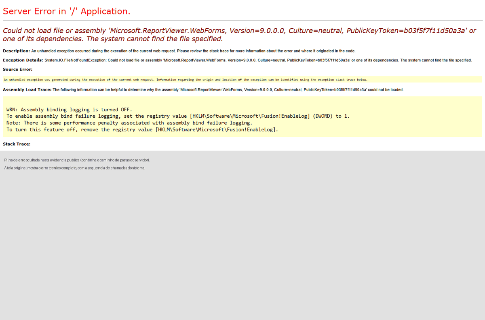
DV-DOC-018 · Ao substituir a revisão, nada recolhe as cópias controladas da revisão antiga
Com uma cópia controlada distribuída, a nova revisão foi posta em vigor e a antiga ficou SUBSTITUÍDA. Não apareceu aviso, tarefa nem pedido de recolhimento; a cópia antiga deixa de ser listada e não existe campo para registrar devolução.
Como reproduzir o erro, passo a passo
- Criar cópia controlada de um documento vigente.
- Criar nova revisão e levá-la à vigência.
- Voltar ao Controle de Cópias.
Esperado
Lista de cópias a recolher e registro da devolução.
Obtido
Nada.
Evidência (captura da tela)
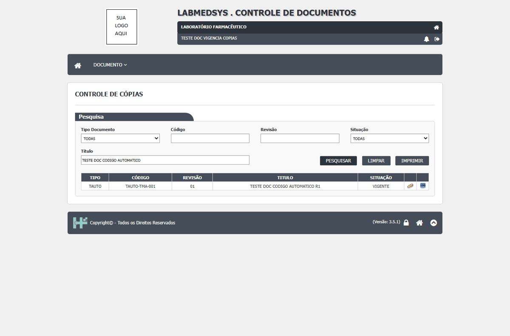
DV-DOC-020 · Nova revisão de documento com código digitado não pode ser aprovada
Para tipos sem código automático, a nova revisão herda o código da revisão vigente (campo bloqueado). Ao aprovar, o sistema recusa: "Já existe um outro documento com o código informado!". A revisão fica parada em "PENDENTE APROVAÇÃO".
Como reproduzir o erro, passo a passo
- Tornar vigente um documento de tipo sem código automático (código digitado na aprovação).
- Criar nova revisão e levar até a aprovação.
- "Assinar e Aprovar".
Esperado
A revisão mantém o código do documento e aprova normalmente.
Obtido
Recusa por código repetido.
Evidência (captura da tela)
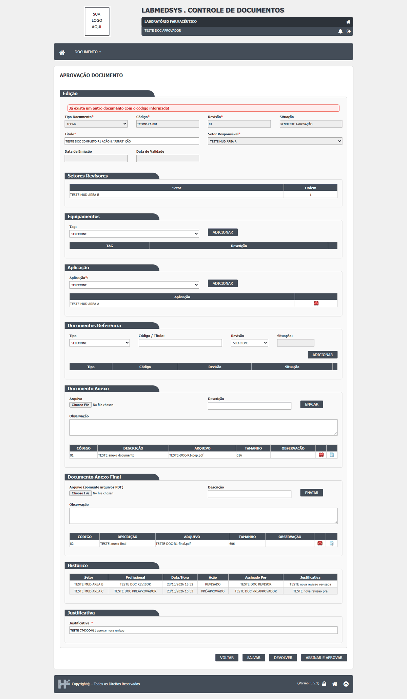
DV-DOC-029 · Tipo de Documento: usuário sem nenhuma função do módulo cria tipo pelo endereço de gravação
O usuário sem nenhuma função do Controle de Documentos recebe "Permissão Negada" ao entrar no módulo, mas abre a lista de Tipo de Documento digitando o caminho e consegue gravar um tipo novo pelo endereço de gravação da tela (a tela de edição confere a função; a gravação, não). Dois usuários sem função criaram um tipo cada um (TNOF2 e TNOF3).
Como reproduzir o erro, passo a passo
- Entrar com um usuário sem função do Controle de Documentos (o módulo mostra "Permissão Negada").
- Abrir /TabelasApoio/TipoDocumento/index digitando o caminho: a lista abre e a pesquisa devolve os tipos.
- Enviar a gravação de um tipo novo (POST em /TabelasApoio/TipoDocumento/Editar) com o código TNOF2.
- Pesquisar TNOF no Tipo de Documento com o administrador ou com o mesmo usuário: o tipo existe.
Esperado
Recusa da gravação (e da lista) para quem não tem a função do cadastro de tipos.
Obtido
"Inclusão efetuada com sucesso."; o tipo aparece na lista com o usuário criador.
Evidência (captura da tela)
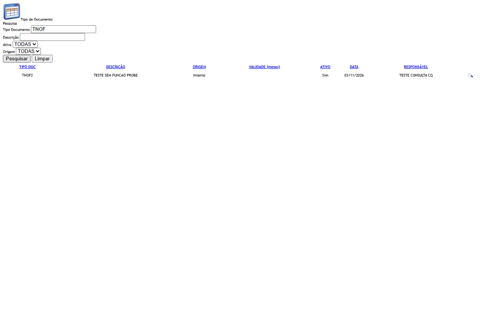
DV-DOC-039 · Usuário sem função cria um Documento Legado e o põe em vigor pelo envio direto, com os nomes de quatro outras pessoas como assinantes e sem senha
Pela tela, o usuário sem nenhuma função no módulo é barrado ao abrir a inclusão do Legado ("Permissão Negada"). Mas a gravação do servidor não confere a função. Com uma credencial de segurança (token) emitida a uma sessão que abre a tela, o envio da inclusão pelo usuário sem função criou o documento 92 em PRÉ INCLUSÃO. Em seguida, o mesmo usuário enviou um anexo (resposta sem erro) e a gravação de "Tornar Vigente" com datas e com os nomes de análise crítica, pré-aprovação, aprovação e vigência escolhidos entre outros quatro usuários: resposta "Alteração efetuada com sucesso.", documento VIGENTE (emissão 01/10/2026, retroativa, validade 01/10/2027). Não houve senha, autenticação nem aviso às pessoas citadas. O histórico do documento registra a mudança de situação feita pelo usuário sem função. Sem o token, o envio é recusado só pela proteção antifalsificação (erro 500), que não é controle de permissão.
Como reproduzir o erro, passo a passo
- Entrar com o usuário sem nenhuma função no módulo e abrir a inclusão do Legado pela tela: "Permissão Negada".
- Ainda nessa sessão, enviar a inclusão do Legado (POST em /Documento/Documento/Incluir) com a credencial de segurança emitida a uma sessão que abre a tela: o documento 92 é criado em PRÉ INCLUSÃO.
- Enviar o anexo (POST em /Anexo/IncluirApenasUmAnexo) com o id do documento 92: resposta sem mensagem de erro.
- Enviar "Tornar Vigente" (POST em /Documento/Documento/TornarVigente) com datas e os nomes de quatro outros usuários: "Alteração efetuada com sucesso."
- Abrir a lista Documento Legado como administrador: o documento 92 aparece VIGENTE e o log mostra a mudança feita pelo usuário sem função.
Esperado
O servidor recusa a inclusão e a vigência do Legado de quem não tem a função, e a vigência exige senha de cada assinante.
Obtido
O documento foi criado e posto em vigor pelo usuário sem função, com assinantes escolhidos por ele, sem senha.
Evidência (captura da tela)
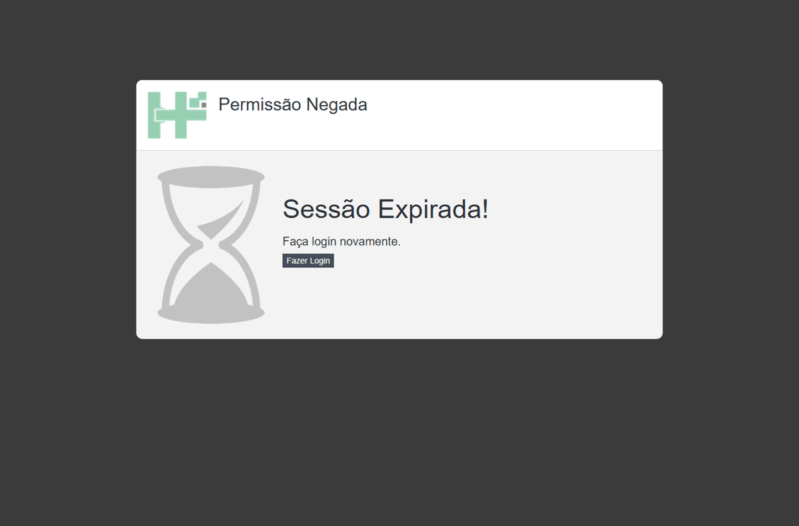
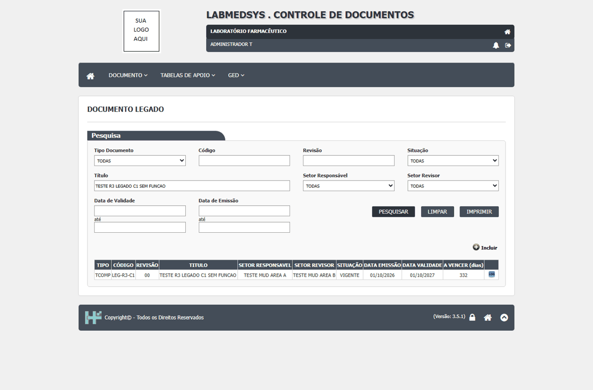
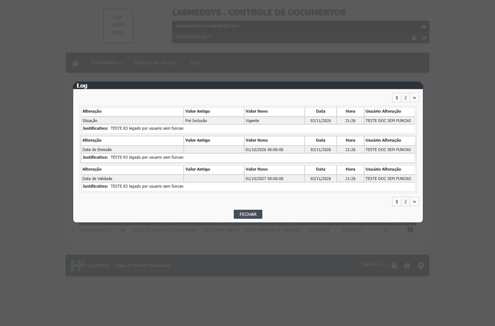
DV-DOC-040 · Usuário sem função inclui Documento Externo vigente, com anexo, pelo envio direto
A tela de inclusão do Documento Externo recusa o usuário sem função ("Permissão Negada"). O envio direto da gravação, porém, é aceito: com o mesmo usuário, o envio do anexo e depois da inclusão (POST em /Documento/DocumentoExterno/Editar) criou o documento externo 7, situação VIGENTE, com anexo, sem aprovação, senha ou conferência de função. O administrador o vê na lista com os ícones Editar, Excluir e Log. O anexo aparece na lista de anexos do documento, mas não abre (a tentativa de abrir redireciona para a lista), o mesmo comportamento da DV-DOC-033.
Como reproduzir o erro, passo a passo
- Entrar com o usuário sem função e abrir a inclusão de Documento Externo pela tela: "Permissão Negada".
- Enviar o anexo (POST em /Anexo/IncluirApenasUmAnexo) e depois a inclusão (POST em /Documento/DocumentoExterno/Editar) com situação Vigente: resposta com a tela de erro de acesso, mas o documento foi gravado.
- Abrir a lista Documento Externo como administrador (Ativo = TODAS): o documento TESTE-R3-EXT-SEMF aparece VIGENTE.
- Abrir o documento e clicar no anexo (reenviado pelo administrador): resposta 302 de volta à lista, sem arquivo.
Esperado
O servidor recusa a inclusão de quem não tem a função e o anexo abre.
Obtido
O documento foi gravado vigente e o anexo não abre.
Evidência (captura da tela)

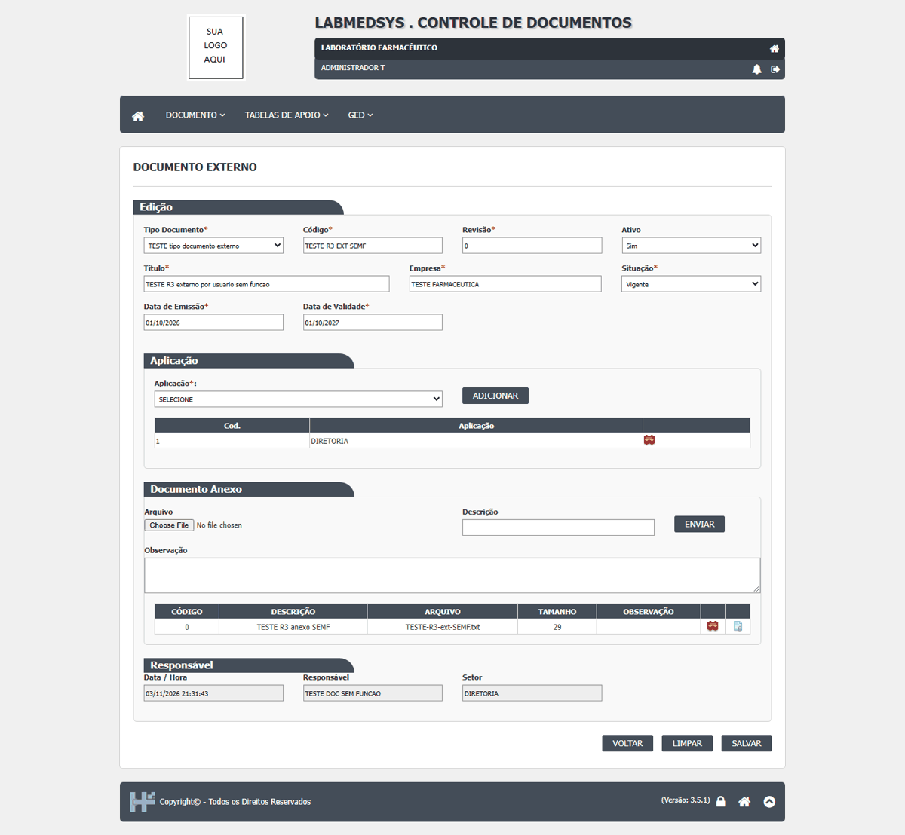
DV-DOC-005 · Tipo de documento pode ser salvo sem nenhuma etapa; lista de etapas sem nome
Um tipo com as nove etapas em "Não" foi aceito ("Inclusão efetuada com sucesso.") e, ao reabrir, continuou sem nenhuma etapa, nem a "Vigente" (a regra RN-DOC-060 dizia que ela sempre entra). A lista "Fluxo de Elaboração / Revisão" mostra nove linhas **sem o nome** da etapa, só Sim/Não e prazo; o usuário precisa adivinhar a ordem.
Como reproduzir o erro, passo a passo
- Abrir Tipo de Documento, Incluir.
- Preencher código, descrição, validade; "Controle do Ciclo de Vida = Sim".
- Marcar "Não" nas nove etapas e Salvar.
- Reabrir o tipo.
Esperado
Recusa de tipo sem caminho de aprovação; etapas com nome visível.
Obtido
Salvo sem etapas; etapas sem nome.
Evidência (captura da tela)
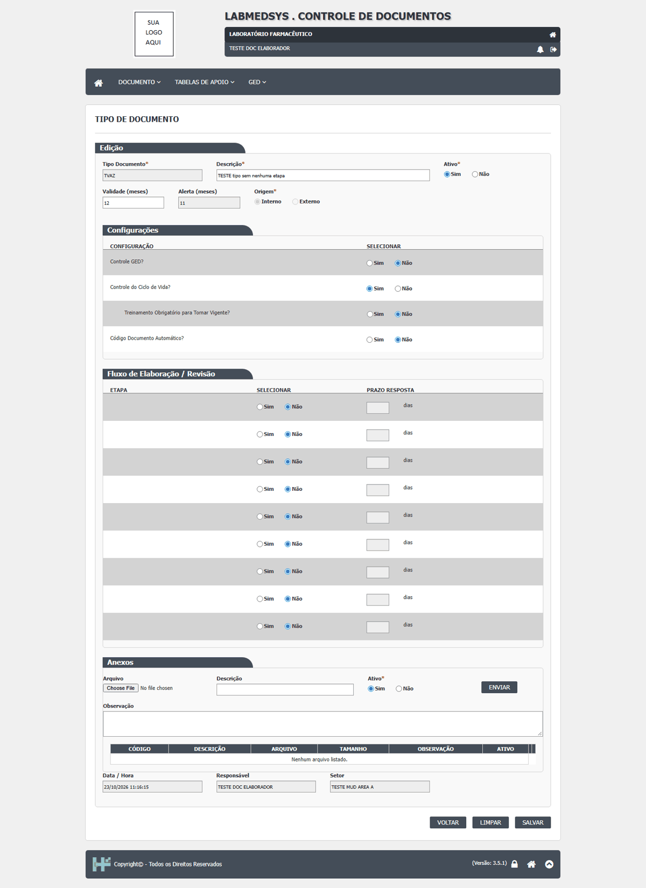
DV-DOC-006 · Mudança do caminho de aprovação do tipo não aparece no histórico do tipo
Alterei o caminho de um tipo (tirei pré-aprovação e aprovação) com justificativa e a tela disse "Alteração efetuada com sucesso.". O log do tipo continuou com uma única linha, "INCLUSÃO DO REGISTRO": nem a mudança nem a justificativa foram registradas.
Como reproduzir o erro, passo a passo
- Abrir um tipo existente em Tipo de Documento.
- Desmarcar etapas, Salvar, informar a justificativa.
- Abrir o log do tipo (ícone LOG na lista).
Esperado
Linha de alteração com valor antigo, valor novo, motivo, usuário, data e hora.
Obtido
Só a inclusão inicial.
Evidência (captura da tela)
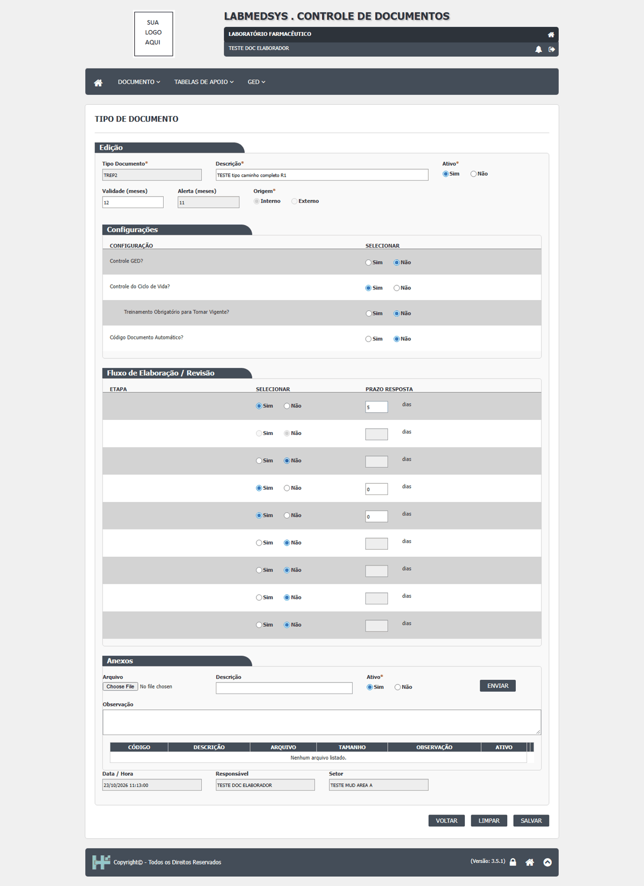
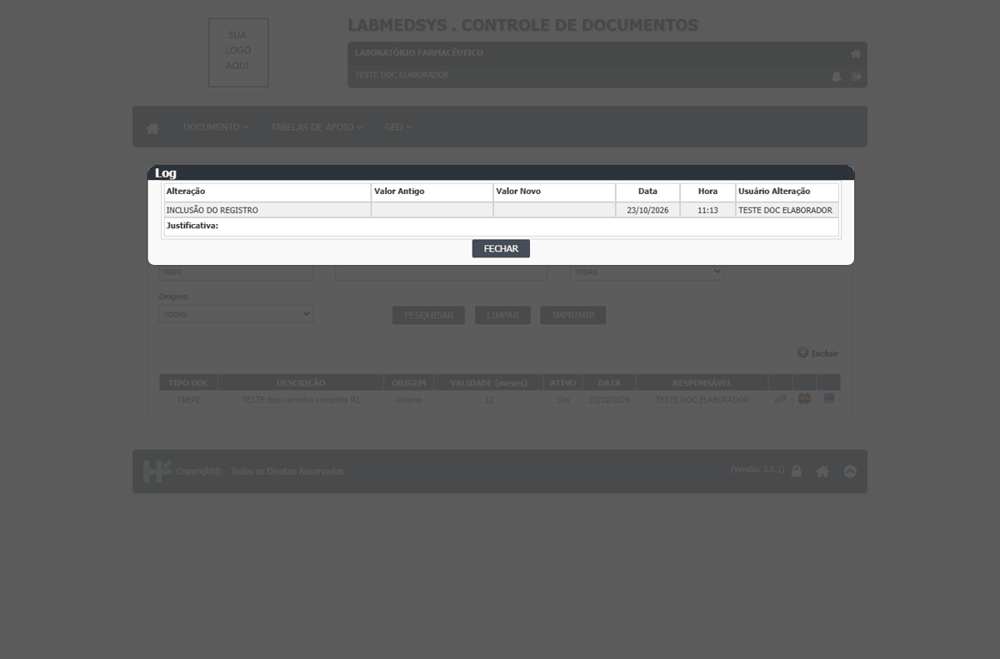
DV-DOC-008 · Tela de vigência troca a validade digitada e soma um mês a mais que o prazo do tipo
A validade digitada que fica fora do limite é **trocada pela própria tela, sem mensagem**: com emissão 23/10/2026 e tipo de 12 meses, validade anterior à emissão, de 3 anos ou até exatamente 12 meses viram **23/11/2027** (13 meses). Assim a regra "validade posterior à emissão" nunca mostra recusa e o prazo do tipo não é respeitado. *Inferência:* a função de datas da tela monta as datas com o mês deslocado em 1.
Como reproduzir o erro, passo a passo
- Abrir Vigência de um documento aprovado de tipo com validade de 12 meses.
- Digitar emissão 23/10/2026; sair do campo (validade sugerida: 23/10/2027).
- Digitar outra validade e sair do campo.
Esperado
Aviso claro quando a validade for inválida; validade máxima igual ao prazo do tipo.
Obtido
Validade substituída em silêncio por 13 meses.
Evidência (captura da tela)
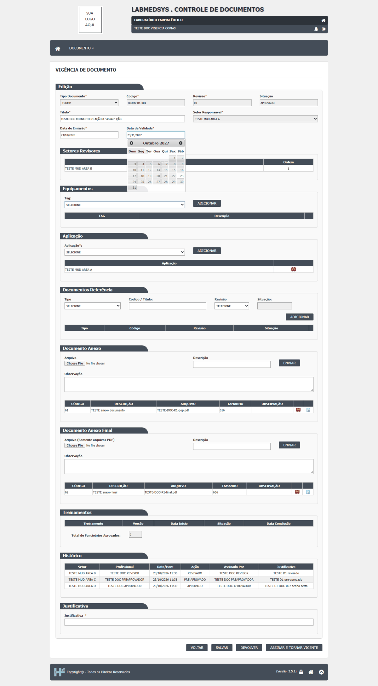
DV-DOC-010 · Documento externo vencido é gravado como "Vigente" e a lista só mostra dias negativos
Um externo com emissão em 01/01/2023 e validade em 01/01/2025 (vencido há 660 dias) foi gravado como "Vigente". A lista mostra "A vencer (dias) = -660", sem alerta nem bloqueio.
Como reproduzir o erro, passo a passo
- Incluir externo com emissão antiga (validade já vencida).
- Salvar e abrir a lista.
Esperado
Recusa ou marca "vencido"; aviso de vencimento.
Obtido
Vigente com -660 dias.
Evidência (captura da tela)
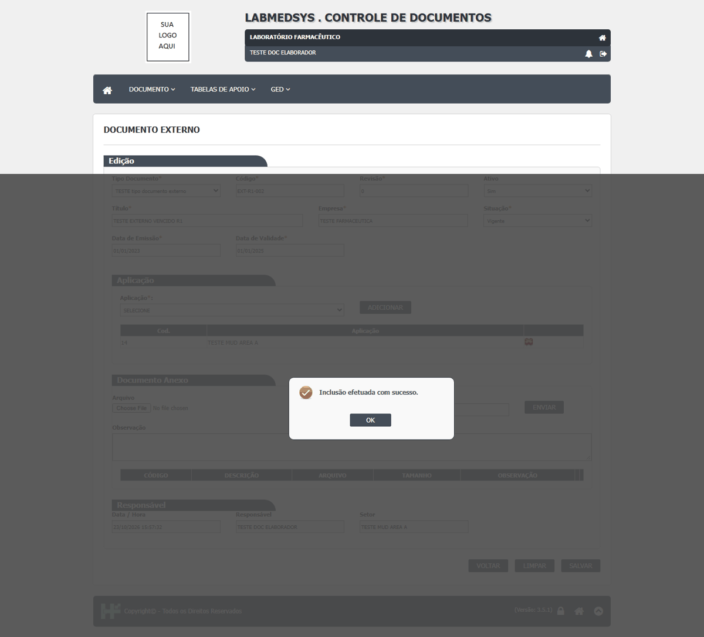
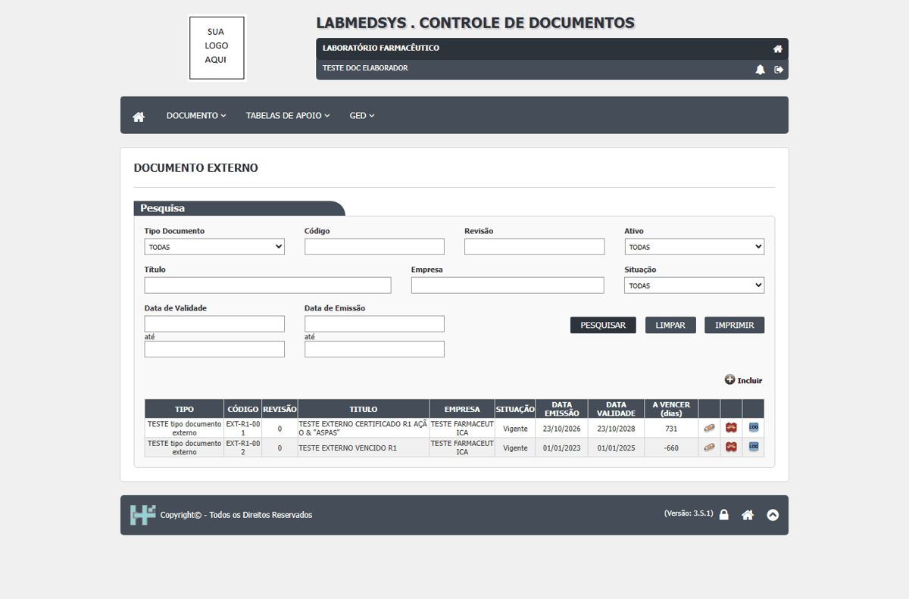
DV-DOC-012 · Documento legado salvo fica preso: a lista não tem como editar
Depois do primeiro "Salvar" o legado vira "PRÉ INCLUSÃO" e a lista do legado não oferece link de edição nem de exclusão. Quem sai da tela antes de "Tornar Vigente" deixa o documento parado; foram dois na rodada.
Como reproduzir o erro, passo a passo
- Incluir um legado e Salvar.
- Voltar para a lista e procurar o documento (situação TODAS).
Esperado
Poder retomar ou excluir o legado em inclusão.
Obtido
Só o link de log.
Evidência (captura da tela)
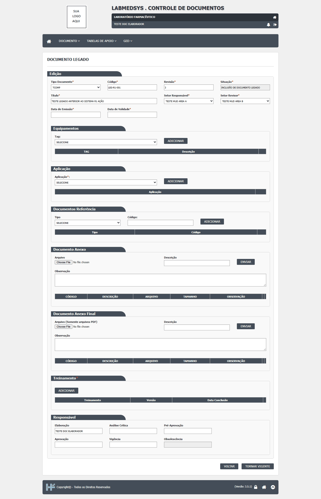
DV-DOC-021 · Nova Revisão não pede motivo nem vínculo com mudança aprovada
O botão "Nova Revisão" cria a revisão na hora, sem confirmação, motivo ou ligação com o controle de mudanças da GQ.
Como reproduzir o erro, passo a passo
- Abrir Visualizar de um documento vigente do seu setor.
- Clicar "Nova Revisão".
Esperado
Motivo registrado e mudança aprovada associada.
Obtido
Revisão criada sem nada disso.
Evidência (captura da tela)
DV-DOC-022 · Obsolescência não pede justificativa
Tornar obsoleto pede confirmação e senha, mas **não pede justificativa**; o histórico guarda "OBSOLETO" com a justificativa em branco.
Como reproduzir o erro, passo a passo
- Obsolescência, abrir um vigente, "Tornar Obsoleto", confirmar e autenticar.
- Ver o histórico.
Esperado
Justificativa obrigatória e registrada.
Obtido
Sem justificativa.
Evidência (captura da tela)
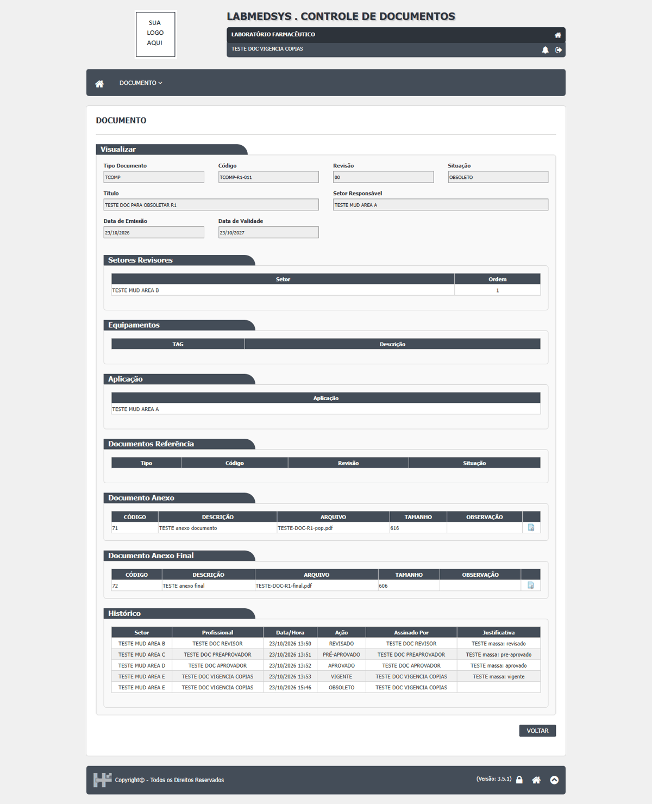
DV-DOC-023 · Devolução do documento não pede senha e não grava assinante; substituição também sem assinante
"Devolver" (revisão e pré-aprovação) grava a ação e a justificativa, mas **sem senha** e com "Assinado Por" vazio. A linha "SUBSTITUÍDO" também fica sem assinante. O documento devolvido volta como "PRÉ INCLUSÃO" ou "PENDENTE ANÁLISE CRÍTICA".
Como reproduzir o erro, passo a passo
- Revisor devolve um documento com justificativa.
- Abrir o histórico.
Esperado
Toda decisão assinada.
Obtido
Sem senha e sem assinante.
Evidência (captura da tela)
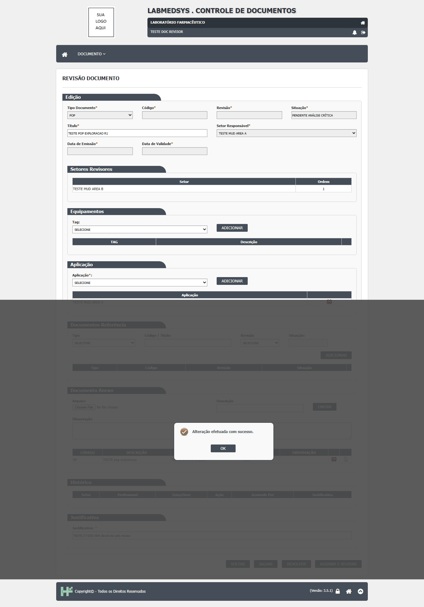
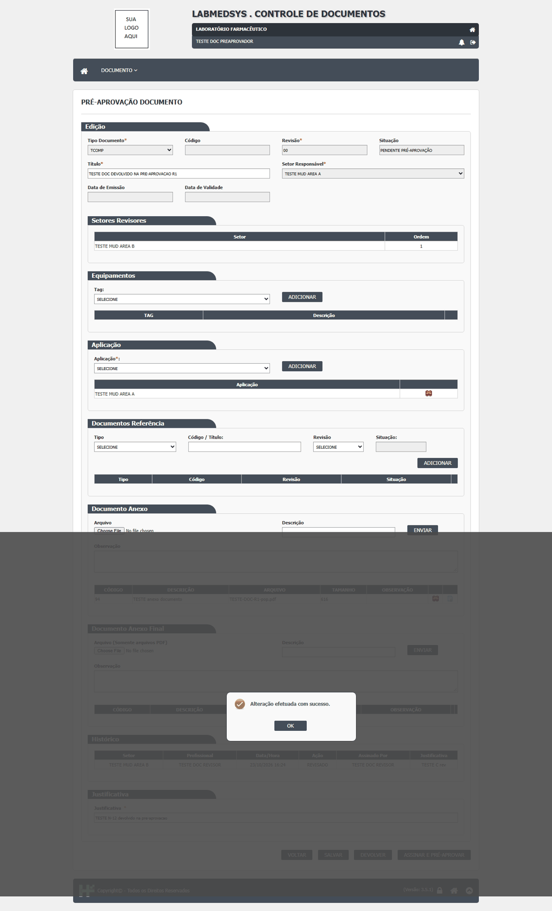
DV-DOC-024 · Exclusões não deixam histórico consultável
O documento excluído em inclusão fica EXCLUÍDO, mas o histórico dele não mostra a exclusão. O documento externo excluído **some de todas as listas**, inclusive com "Ativo = TODAS", e por isso o log dele não pode ser consultado.
Como reproduzir o erro, passo a passo
- Excluir um documento em inclusão e um externo, com justificativa.
- Procurar o log de cada um.
Esperado
Exclusão visível, com justificativa, usuário e data.
Obtido
Sem registro visível.
Evidência (captura da tela)
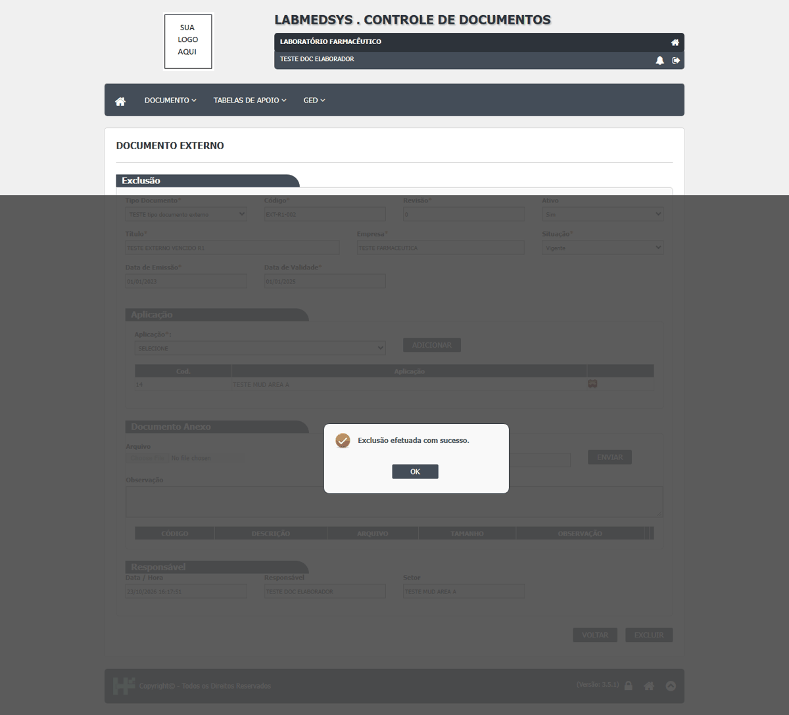
DV-DOC-025 · Anexo aceita qualquer tipo de arquivo, inclusive vazio e com extensão de programa
O envio do anexo aceitou um arquivo .txt, um PDF de 0 byte e um arquivo com extensão .exe ("Arquivo enviado com sucesso."). Não há conferência de tipo, tamanho nem conteúdo.
Como reproduzir o erro, passo a passo
- Abrir um documento em inclusão.
- Escolher o arquivo e "Enviar".
Esperado
Aceitar só tipos permitidos e arquivos com conteúdo.
Obtido
Tudo aceito.
Evidência (captura da tela)
DV-DOC-034 · Visualizar: o filtro de data só funciona com as duas datas preenchidas e consulta a emissão, não a validade
O filtro rotulado "Data de Validade" ignora a data quando só uma das duas é preenchida: com só "de" = 01/01/2030 ou só "até" = 01/01/2020, o documento de validade 03/11/2027 continua na lista. Com as duas datas, a busca usa a data de emissão: o intervalo 01 a 05/11/2026 (emissão 03/11/2026) o encontra; o intervalo 01 a 05/11/2027 (a validade real) não.
Como reproduzir o erro, passo a passo
- Abrir Visualizar e pesquisar o título TESTE R2 DOC D.
- Preencher só a data "de" 01/01/2030 e pesquisar: o documento aparece.
- Preencher as duas datas 01/11/2027 a 05/11/2027 (validade): nada aparece; 01/11/2026 a 05/11/2026 (emissão): aparece.
Esperado
Filtrar pela validade, também com uma data só.
Obtido
Uma data é ignorada; com as duas, filtra pela emissão.
Sem captura de tela registrada para este defeito.
DV-DOC-026 · Ordenação da lista por Código e por Tipo não é coerente
Clicar no cabeçalho "Código" não ordena no primeiro clique ("", "revisão final", "", …) e, no segundo, ordena como número (1000, 200, 100, 2). "Tipo" não segue o código do tipo.
Como reproduzir o erro, passo a passo
- Documento, Pesquisar, clicar no cabeçalho Código duas vezes.
Esperado
Ordem crescente e decrescente por texto.
Obtido
Sem ordem / ordem numérica de texto.
Evidência (captura da tela)
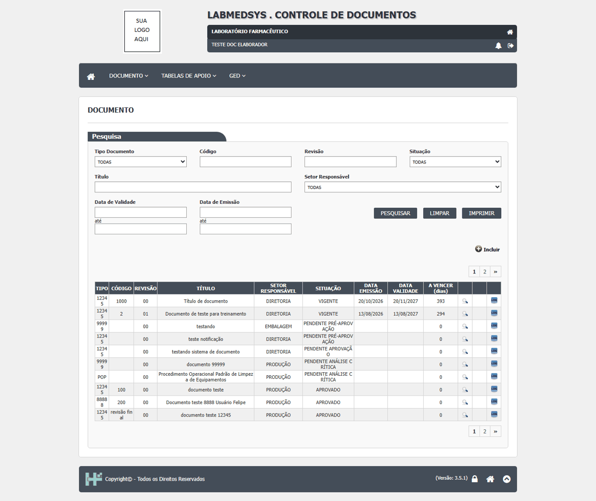
DV-DOC-027 · Descrição de tipo repetida é aceita; primeira situação aparece como "PRÉ INCLUSÃO"
Dois tipos com a mesma descrição e códigos diferentes foram aceitos. A situação inicial do documento aparece como "PRÉ INCLUSÃO", e as regras chamam de "Em inclusão".
Como reproduzir o erro, passo a passo
- Incluir dois tipos com a mesma descrição.
Esperado
Descrição única; nome de situação igual ao do fluxo.
Obtido
Duplicidade aceita; nome diferente.
Evidência (captura da tela)
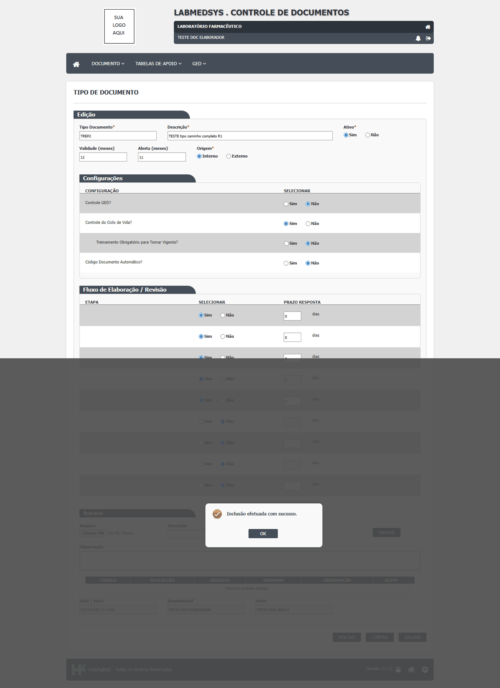